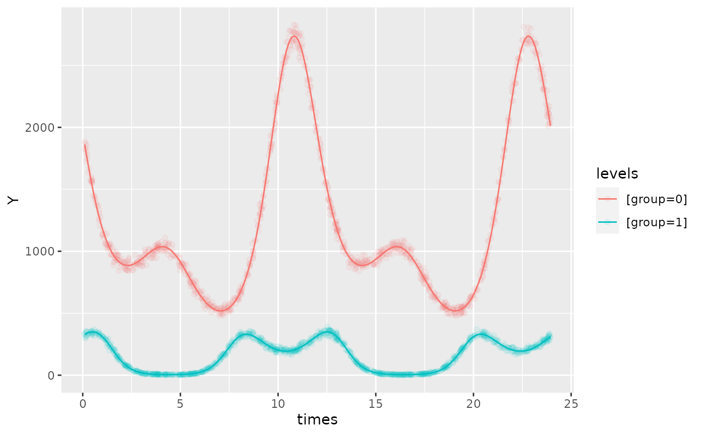
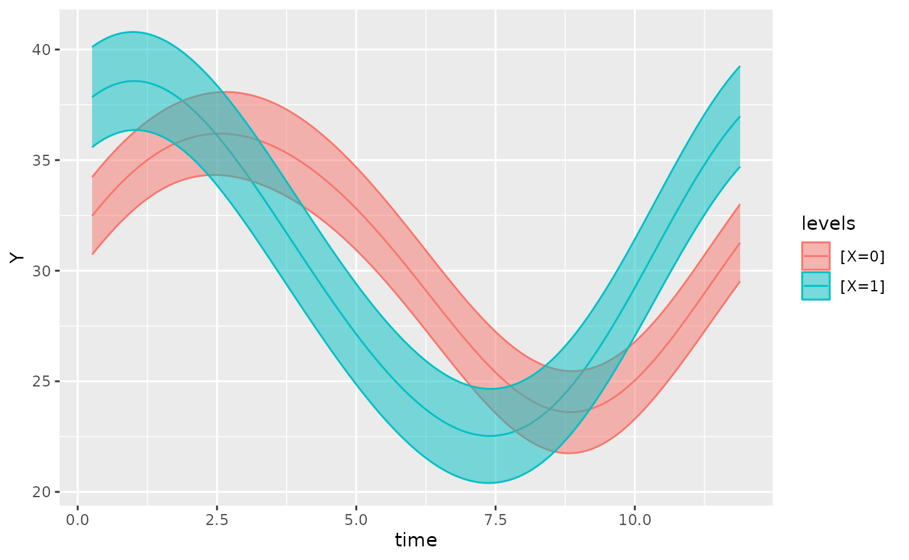
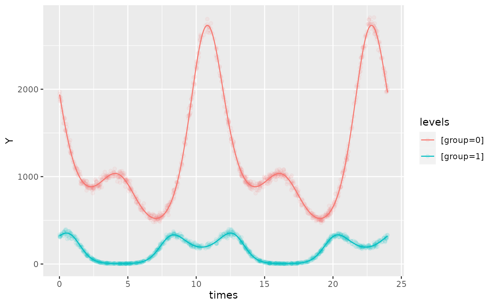

multiple-components
Oliver Jayasinghe and Rex Parsons
Source:vignettes/multiple-components.Rmd
multiple-components.RmdGLMMCosinor allows specification of multi-component cosinor models. This is useful if there are multiple explanatory variables affecting the dependent variable, given that their period is known. The plot below shows a 3-component model with the simulated data overlayed:
testdata <- simulate_cosinor(1000,
n_period = 2,
mesor = 7,
amp = c(0.1, 0.4, 0.5),
acro = c(1, 1.5, 0.1),
beta.mesor = 4.4,
beta.amp = c(2, 1, 0.4),
beta.acro = c(1, -1.5, -1),
family = "poisson",
period = c(12, 6, 12),
n_components = 3
)
object <- cosinor.glmm(Y ~ group + amp_acro(times,
n_components = 3,
period = c(12, 6, 12),
group = "group"
), data = testdata, family = poisson())
autoplot(object, superimpose.data = TRUE, x_str = "group", predict.ribbon = FALSE, data_opacity = 0.08)
To generate a multi-component model, set n_components in the amp_acro() part of the formula to the desired number of components. Then, optionally assign groups to each component in the ‘group’ argument. If only one group entry is supplied but n_component is greater than 1, then the single group entry will be matched to each component.
The ‘period’ argument must also match the length of n_components, where the order of the periods corresponds to their assigned component. For example, if n_components = 2, and period = c(12,6), then the first component has a period of 12 and the second a period of 6. Similarly to the ‘group’ argument, if only one period is supplied despite ‘n_components’ being greater than 1, then this period will be matched to each component.
object <- cosinor.glmm(
Y ~ X + amp_acro(time, n_components = 2, group = "X", period = c(12, 6)),
data = vitamind
)
autoplot(object)
Alternatively, a component may have no grouping structure:
object <- cosinor.glmm(
Y ~ amp_acro(time, n_components = 2, group = c("X",NA), period = c(12, 6)),
data = vitamind
)
object
#>
#> Conditional Model
#>
#> Raw formula:
#> Y ~ main_rrr2 + main_sss2 + X:main_rrr1 + X:main_sss1
#>
#> Raw Coefficients:
#> Estimate
#> (Intercept) 30.30906
#> main_rrr2 0.45873
#> main_sss2 0.10350
#> X0:main_rrr1 0.87093
#> X1:main_rrr1 6.50396
#> X0:main_sss1 6.21742
#> X1:main_sss1 4.62685
#>
#> Transformed Coefficients:
#> Estimate
#> (Intercept) 30.30906
#> [X=0]:amp1 6.27812
#> [X=1]:amp1 7.98181
#> amp2 0.47026
#> [X=0]:acr1 -1.43162
#> [X=1]:acr1 -0.61833
#> acr2 -0.22191
autoplot(object)
In the example above, we have a multicomponent cosinor model with two components. The first component is grouped by the X variable in the input data whereas the second component is not grouped. In the resulting output, we can see that each component is represented by the suffixes (1 and 2). The first component has the grouping structure but the second is represented only by the amp2 and acr2 (transformed) parameter estimates.